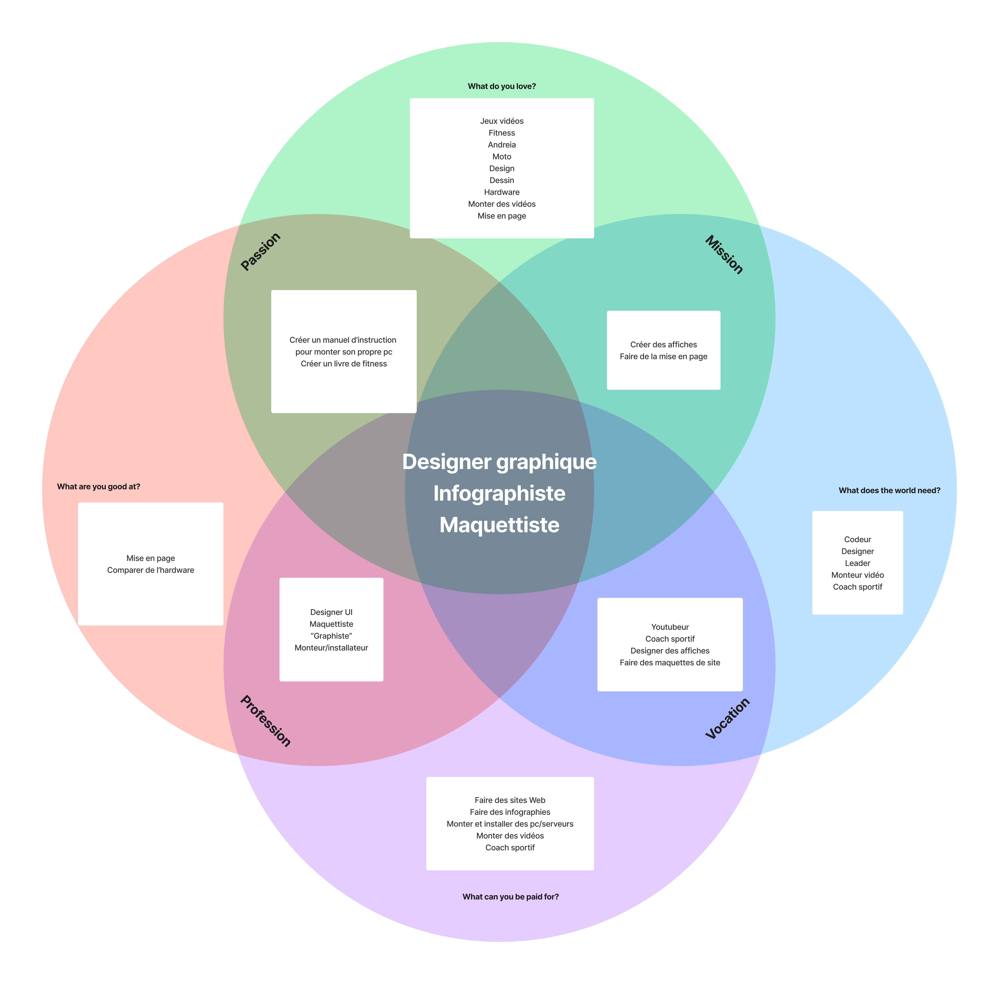

Je suis un jeune étudiant de 22 ans en 3ème année d'ingénierie des médias à la HEIG-VD et j'habite dans le canton de Neuchâtel. Dans le cadre de mon CFC de médiamaticien j'ai déjà pu expérimenter la maintenance de site Web et la création de médias pour des événements concrets. J'ai un parcours très polyvalent ce qui fait que je m'adapte à tous types d'environnements et j'essaye tous les jours de m'améliorer que ce soit dans ma vie professionnelle ou personnelle. Mes intérêts pour l'avenir se trouvent dans le design UI/UX, l'infographie, le marketing et la communication.
Ce métier combine création graphique et développement informatique. Il est également lié aux arts graphiques. Je l'ai choisi parce que j’aime mélanger ma passion pour les ordinateurs et mon intérêt pour le design et la mise en page !  1. Ikigaï réalisé pour définir mon métier de rêve
Afin de mieux comprendre ce métier, j'ai utilisé une méthode de classification sous forme de mots-clés pour faire mes recherches sur le métier d'infographiste. Voici quelques mots-clés qui lui sont associés :
Et finalement, les jobs corrélés à mon IkigaÏ sont les suivants :
{kind=link}
{kind=link}